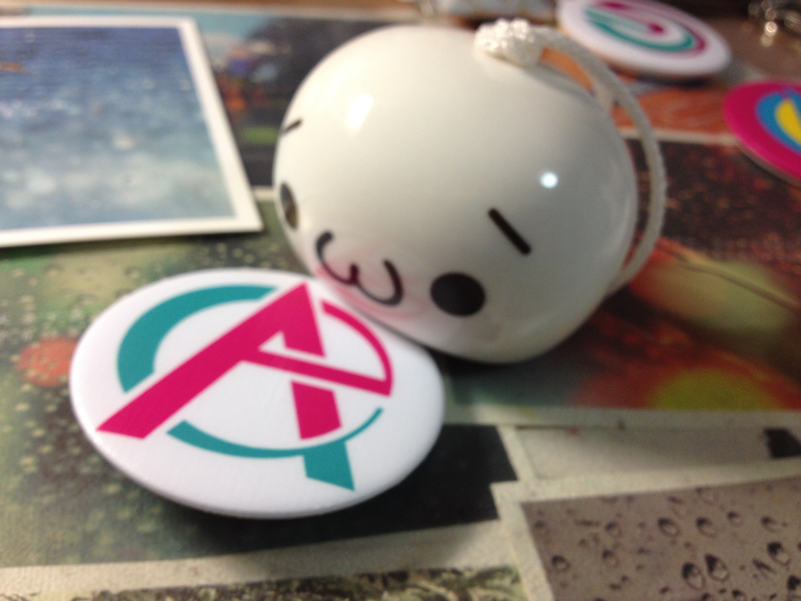
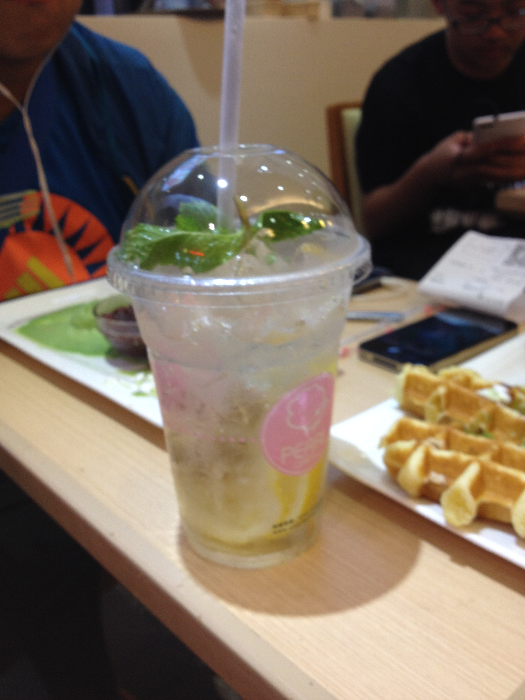
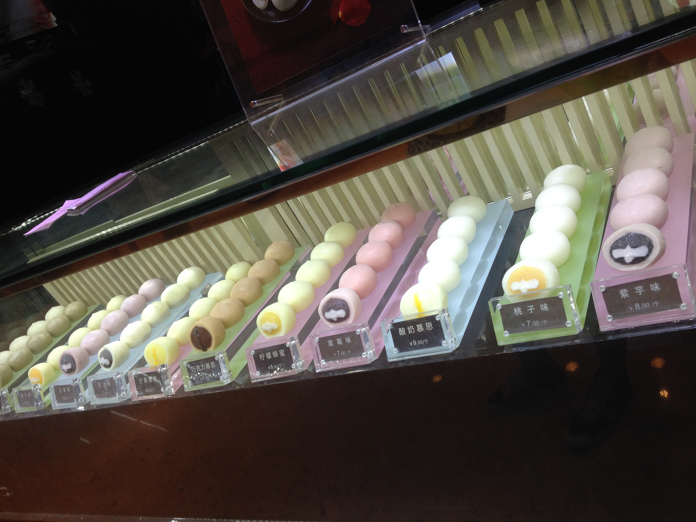
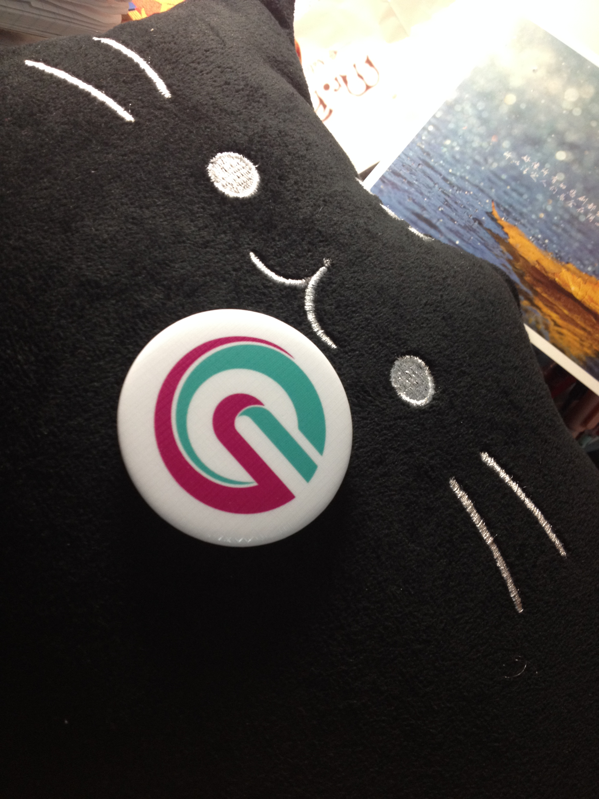

It's My Life!




~2010
I grew up in a big city-Shenyang in China and received early education in a normal elementary school. I developed lots of hobbies especially drawing at young age and was able to keep them to now.
2010
In the year 2010, I had the chance to go to the US and live there with my mom, who is a visiting scholar in Northern Michigan University. During that valuable year, I had learned more than just English the language. All the culture, activities and American-style thinking were carved deep in mind. The memories are so valuable that they still have great influence in my daily life.
2012
I successfully entered the best Middle School in Shenyang-Yucai Middle School and began a brand new journey in the class of Math Specialist Class 2.
2015
I passed the entrance test to Yucai High School which is a must for Chinese students.
2015~
I will be in high school(in China high school is from 10th grade to 12th grade) this fall and I am just hoping that everything goes on well!